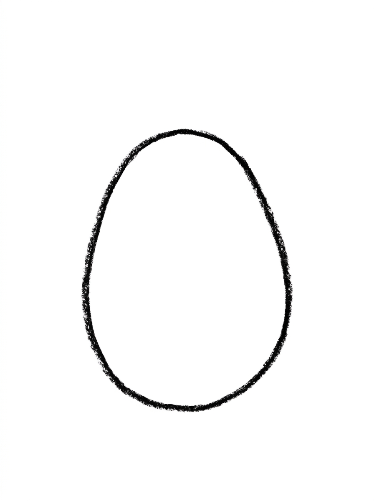
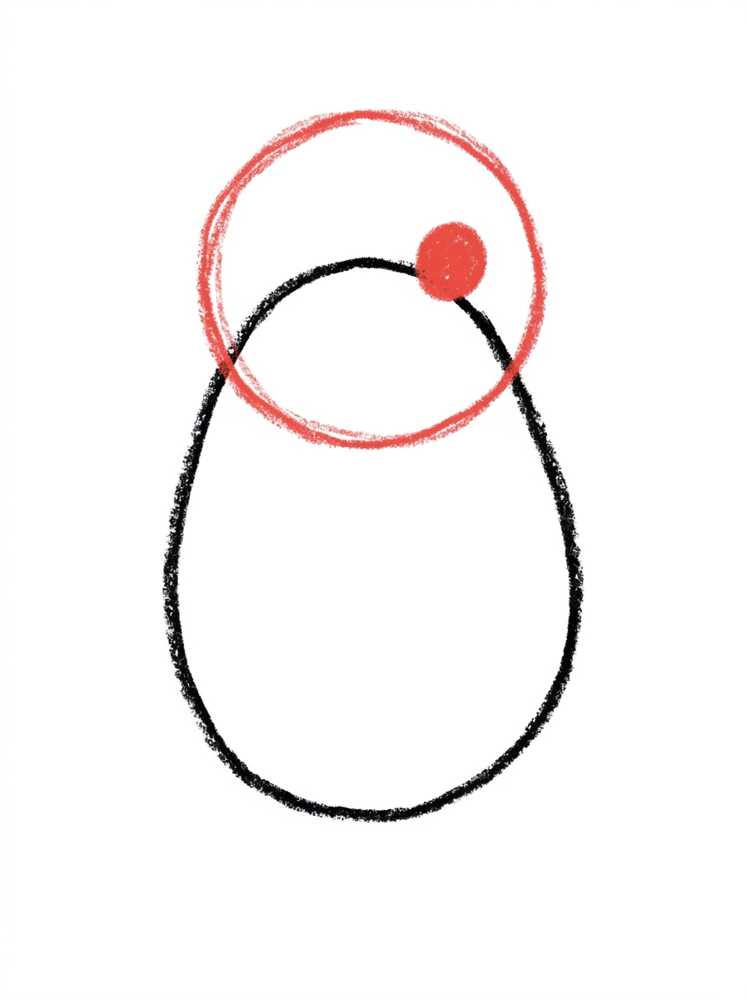
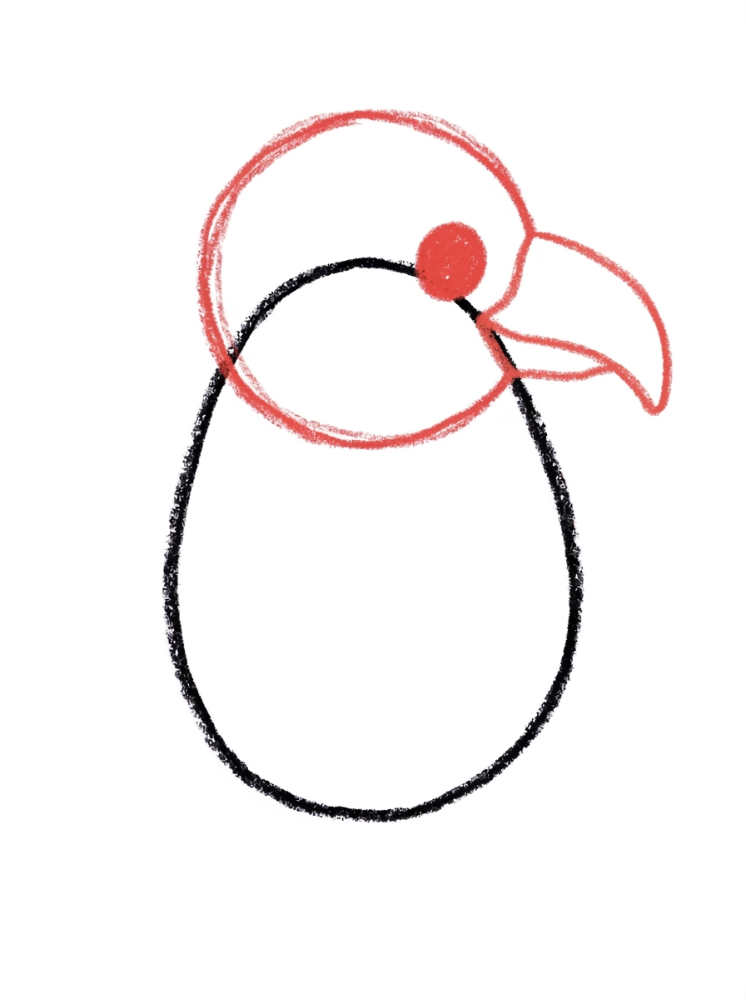
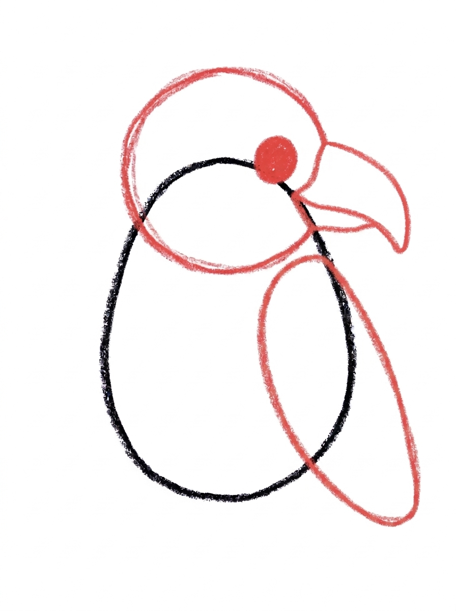
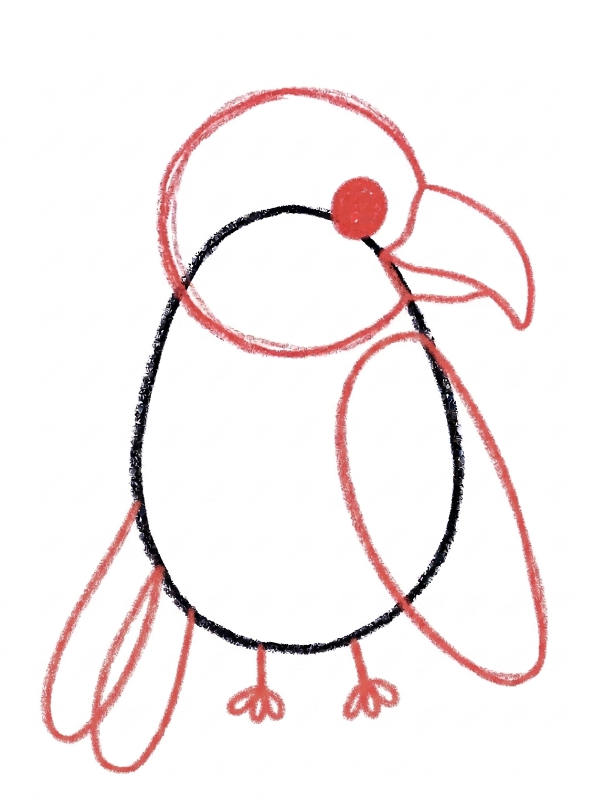
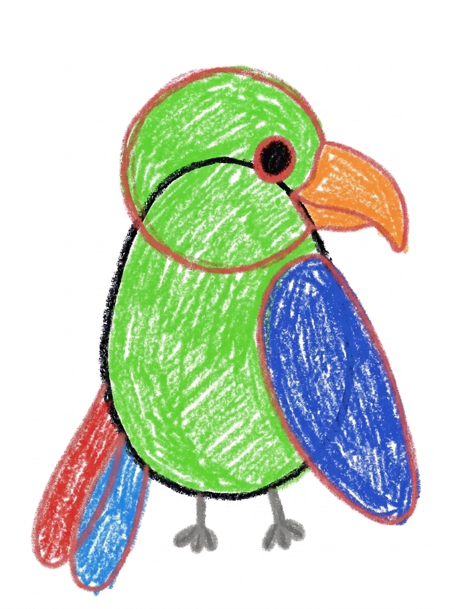

Parrot Drawing for Kids How to Draw A Parrot in 6 Easy Steps
Quick Answer
Draw a parrot in six easy steps: a plump oval body, a round head with a big eye, a hooked beak, a long wing, and two tail feathers with little feet. Color it bright green with a blue wing and orange beak. Made for ages 3 and up — no signup, just print.
At a Glance
- Subject: How to draw a parrot
- Ages: 3+
- Steps: 6 steps
- Time: ~15 min
- Difficulty: Easy
- Supplies: Paper, crayons
Parrots are pure color, but the drawing underneath them is simple — a plump body, a round head, and one big hooked beak that does all the talking. This one sits in side view, so kids only need one eye and one wing.
✏️ Draw Your Parrot in 6 Easy Steps
One step per box — this step by step parrot drawing shows each new part in a different color so kids can see exactly what changed.
Step 1: The Body

Draw one plump upright oval, a little tilted and wider at the bottom — that's the parrot's body.
Step 2: The Head and Eye

Add a circle overlapping the top of the body for the head, with one big dot on the front half for the eye.
Step 3: The Beak

Draw one big hooked beak on the front of the head, curving out and down to a rounded point.
Step 4: The Wing

Draw one long rounded wing lying along the side of the body, from the middle down to the lower part.
Step 5: The Tail Feathers and Feet

Add two long tail feathers hanging down side by side from the bottom of the body, and two small feet with tiny toes under the front.
Step 6: Color It In

Color your parrot! Bright green for the body and head, royal blue for the wing, an orange beak, one red tail feather and one blue, and gray feet. Great drawing!
📊 Parrot Drawing by Age
Every age can join in — just adjust the job.
| Age | What they can do | Tip |
|---|---|---|
| 3-4 | Draw the plump body oval and color the finished parrot bright green. | A slight tilt makes the body feel like a perched bird — upright and stiff reads as a penguin instead. |
| 4-5 | Add the head with its big eye, the hooked beak, and the long wing down the side. | The beak goes out first, then hooks down — say 'out and down' while they draw it and the hook lands. |
| 6+ | Finish all six steps, including the two long tail feathers and the two small feet with tiny toes. | Let older kids draw the tail feathers extra long — parrot tails are dramatic, and longer reads better. |
🖨️ Download Your Free Parrot Drawing Printable
The printable lays out all 6 steps one per box, big enough for little hands — kids draw right alongside each step.
⬇️ Open Free Printable 🖨️ Print🎁 Free printable for ages 3+
🦜 Parrot Talk Page
Parrots talk, so give yours something to say: draw a branch under its feet to perch on, a few big jungle leaves in the corners, and a speech bubble beside its beak with a word inside — 'Hello!' is the classic. Then decide together what this parrot has been listening to: pirate phrases, the family's morning routine, or the dog's name called over and over. Write one sentence about the parrot under the drawing (or dictate it for a grown-up to write).
What You'll Need to Draw A Parrot
All you need is a pencil, an eraser, and crayons or markers. For the colors in the tutorial, have bright green ready for the body and head, royal blue for the wing, orange for the beak, red and blue for the two tail feathers, and gray for the feet. Regular printer paper or a sketchbook both work.
What They're Learning
This tutorial practices profile drawing — showing an animal from the side with one eye and one wing — plus a controlled hook curve for the beak and long parallel lines for the tail feathers. Kids also plan two-tone coloring (one red feather, one blue) and add small precise details like toes at a tiny scale.
Make It Yours
Try scarlet macaw colors (red body, blue and yellow wing), a blue-and-gold macaw, a branch perch with jungle leaves, or a whole row of parrots on one branch colored like a rainbow. A crest of feathers on the head turns it into a cockatoo cousin.
🛒 Our Favorite Drawing Supplies
These are the supplies we reach for in our own home — washable (because kids), quality paper, and enough colors to avoid fights.
As an Amazon Associate, MomYouNeedThis earns from qualifying purchases — at no extra cost to you.
💡 Parrot Drawing Tips for Parents
Step 3's beak decides the drawing. The common slip is a small triangle beak, which turns the parrot into a songbird. Coach the two-part move — out from the face first, then hook down to a rounded point — and let the beak be big. If the first beak comes out small, draw a second, bigger one right beside the picture so your child can feel the difference in size.
Reassure kids about the single eye before step 2: side-view animals show one eye, and that's correct, not a shortcut they're 'getting away with.' At step 5, the tail feathers should hang well below the body and stay side by side like two ribbons — long is right, and slightly uneven lengths look natural.
🦜 Parrots in the Real World
Parrots live in the warm forests of South America, Africa, Asia, and Australia, and they are some of the most colorful birds on Earth. That big hooked beak is a tool, not just a decoration: parrots use it to crack hard nuts and seeds, and even as a third hand for climbing. Their feet are unusual too — two toes point forward and two point backward, perfect for gripping branches and holding snacks.
Some parrots learn to copy human words, and many live for decades — a pet parrot can be a lifelong companion. Most wild parrots are loud, social, and almost never alone. Ask your child what their parrot's favorite word would be; the answer is rarely 'hello.'
✋ Warm-Up: Hook Curves
The parrot's signature shape is a hook, so practice hooks. Draw a row of question marks without their dots, then a row of candy canes, then hooks getting bigger and bigger. Five or six hooks on scrap paper and the beak in the tutorial stops being scary — it is just the biggest hook on the page.
If the beak still comes out small, there is a friendly fix: draw a second, bigger hook right around the first one and let the small line disappear into the coloring later. Parrots forgive a lot once the bright colors arrive.
📖 Give Your Parrot a Story
A parrot with something to say needs an audience. Who is your parrot talking to, and is it telling a secret, asking for a cracker, or repeating something it should not have heard? Have your child dictate the parrot's line and write it under the drawing — parrots are the one animal where the caption is the whole point.
For page two, the bird tutorial draws the parrot's smaller, quieter cousin. Kids enjoy the contrast: same bird family, completely different personality, and a good excuse to compare the two drawings side by side. Fill the jungle canopy with a swinging neighbour from how to draw a monkey, or start smaller with how to draw a bird.
❓ Parrot Drawing FAQs
What is the easiest way to draw a parrot?
Draw the parrot from the side: a plump oval body, a round head, and one big hooked beak are most of the bird. Add one long wing, two long tail feathers, and two little feet, and the parrot is done — the bright colors at the end do the rest.
What age is this parrot drawing for?
It's made for ages 3 and up. Younger kids can draw the body, head, and coloring, while older kids add the beak curve, wing, tail feathers, and feet themselves.
What supplies do we need?
A pencil, an eraser, paper, and crayons or markers. For colors you'll want bright green, royal blue for the wing, orange for the beak, red and blue for the tail feathers, and gray for the feet.
Is the printable really free?
Yes — every printable on MomYouNeedThis is 100% free, including this parrot drawing tutorial. There is no signup, no email, and no catch — just download, print, and draw.
How do I print it?
Open the PDF and choose Print, then set the scale to 100% (sometimes called Actual Size) so the steps print at full size. The tutorial is designed for regular US Letter paper, and plain printer paper works perfectly.
Why does the parrot only have one eye?
Because it's drawn from the side — a profile view. We see one side of the bird, so one eye and one wing is correct, the same way a photo of a parrot sitting sideways shows one eye. Side views are a friendly shortcut for young artists.
How do I draw the hooked beak?
Start wide where the beak meets the face, curve it out, then hook it down to a rounded point — like the tip of a banana or a pirate's hook. One smooth curve out and down is the whole trick.
Can my parrot be a different color?
Parrots are the best subject for wild color — real ones include the scarlet macaw in red, blue, and yellow, and the blue-and-gold macaw. Any bright combination works; keep the wing a different color from the body so it stands out.
📚 Keep Exploring
- ✏️ All 76 Drawing Tutorials 76 free step-by-step drawing tutorials for kids.
- 🐾 Animal Coloring Free animal coloring pages for kids.
- ✏️ Drawing Practice Free printable drawing pre-writing worksheet for toddlers.